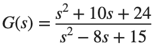
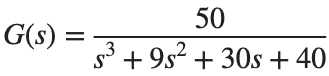

Frequency-Domain Stability
실행 조건
MATLAB · Control System Toolbox
학습 목표
Time Response를 모두 돌리기 전에, Frequency Response와 열린 고리의 Pole로 안정성을 판단해 봅니다.
Open-loop와 Closed-loop의 불안정 Pole
시작 조건

, ,1. 음의 단위 Feedback입니다.진행 방법
- Open-loop의 우반평면 Pole 수 P를 세세요.
- 각 K의 Nyquist plot을 그리고 Closed-loop Pole의 우반평면 개수 Z를 직접 계산하세요.
- -1점의 감김 방향에 대한 본인의 부호 규약을 적고 P·감김 수·Z의 관계를 확인하세요.
남길 결과
- Nyquist 그림 2개와 판별 표.
s=tf('s'); G=(s^2+10*s+24)/(s^2-8*s+15); disp(pole(G));
for k=[.5 1], disp(k); disp(pole(feedback(k*G,1))); end
% TODO: Nyquist Plot과 감김 수를 기록하세요.
결과 기록·자가 점검
K | |
P | |
감김 수와 방향 | |
Z | |
Closed-loop 안정 여부 |
확인할 점
- Open-loop Pole이 있다는 사실만으로 Closed-loop도 불안정하다고 결론내리지 않았는가?
- Nyquist 판별과 Closed-loop Pole 계산이 일치하는가?
안정 여유와 Gain 변화
시작 조건

, 를 비교합니다.진행 방법
- margin(K*G)의 Gain Margin·Phase Margin·각 교차 주파수를 구하세요.
- Gain Margin은 선형 비와 20log10 변환한 dB 값을 나누어 표기하세요.
- 각 Closed-loop Pole과 Time Response를 확인해 여유와 안정성의 관계를 설명하세요.
남길 결과
- 여유 표와 응답 비교 그림.
s=tf('s'); G=50/(s^3+9*s^2+30*s+40);
for k=[1 3 5]
[gm,pm,wcg,wcp]=margin(k*G); disp([k gm pm wcg wcp]);
end
% TODO: Gain Margin의 선형 비·dB 열과 Pole·Time Response를 추가하세요.
결과 기록·자가 점검
K | |
GM [ratio] | |
GM [dB] | |
PM [deg] | |
교차 ω [rad/s] | |
안정 여부 |
확인할 점
- GM의 선형비와 dB 값을 구분했는가?
- 정의되지 않거나 무한인 여유는 그 상태로 표시했는가?
주파수 범위를 바꾸었을 때
시작 조건
같은 G에서 ω=[.1,1,10]만 본 경우와 logspace(-2,3,1000)을 본 경우를 비교합니다.
진행 방법
- 두 격자의 이득·위상을 비교하세요.
- 성긴 세 점만 보고 교차점과 안정 여유를 판단할 때 놓치는 정보를 적으세요.
- 판별 결과와 그래프 해상도를 혼동하지 않도록 계산 값과 시각적 근거를 함께 기록하세요.
남길 결과
- 해상도 비교 그림과 짧은 해석.
s=tf('s'); G=50/(s^3+9*s^2+30*s+40); coarse=[.1 1 10]; fine=logspace(-2,3,1000);
% TODO: freqresp(G,coarse)와 freqresp(G,fine)의 이득·위상을 비교하세요.
결과 기록·자가 점검
주파수 격자 | |
관측한 교차점 | |
계산 GM·PM | |
판단의 한계 |
확인할 점
- 관측 주파수 범위와 표본 수를 명시했는가?
- 계산된 여유와 눈으로 추정한 여유를 구분했는가?